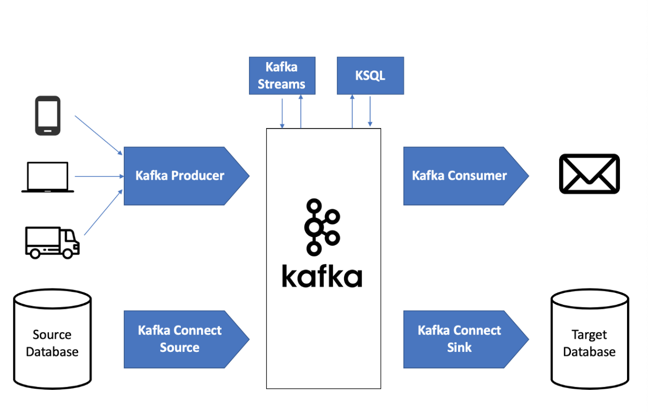

In this post, we would like to go over how to run Kafka with Docker and Python. Before starting the post, make sure you have installed Docker (Docker hub) on your computer.
Step 1. Docker Image Setup
Okay, first, let’s create a directory folder to store docker-compose.yml file.
The docker-compose file does not run your code itself.
1
$ mkdir ~/docker-kafka &&cd docker-kafka
You can pull kafka and zookeeper images by using this docker pull command, more detailed explanation can be found in the following link - kafka and zookeeper from Docker Hub.
Instead of pulling images separately, you can write docker-compose.yml file to pull those simultaneously. What is docker-compose.yml file? It is basically a config file for Docker Compose. It allows you to deploy, combine, and configure multiple docker containers at the same time. Is there difference between dockerfile and docker-compose? Yes! “A Dockerfile is a simple text file that contains the commands a user could call to assemble an image whereas Docker Compose is a tool for defining and running multi-container Docker applications” (dockerlab)
# This docker-compose file starts and runs:# * A 1-node kafka cluster# * A 1-zookeeper ensembleversion:'2'services:zookeeper:image:wurstmeister/zookeepercontainer_name:zookeeperports:- "2181:2181"kafka:image:wurstmeister/kafkacontainer_name:kafkaports:- "9092:9092"environment:KAFKA_ADVERTISED_HOST_NAME:127.0.0.1KAFKA_ZOOKEEPER_CONNECT:zookeeper:2181volumes:- /var/run/docker.sock:/var/run/docker.sock
Step 3. Run docker-compose
Make sure you run the following command where docker-compose.yml file is located at.
You may run the following command at any time from a separate terminal instance:
1
$ docker-compose ps
Stopping & Cleaning Up Docker Compose
When you are ready to stop Docker compose you can run the following command
1
$ docker-compose stop
And if you’d like to clean up the container to reclaim disk space, as well as the columns containing your data, run the following command:
1
2
$ docker-compose rm -v
Are you sure? [yN] y
Further More with Python
So, when you completed connecting kafka and docker, it’s time to actually get real-time tweets from twitter through kafka.
Imagine, you own a small company which produces a service to users through own online platform. Then, there should be a source system like clickstream and a target system like own online platform. Data integration between the source system and target system woudln’t be that complicated. But, once the size of your company grows, the company would face lots of struggles when the company has more source systems and target systems with all different data sources. That’s the when the Kafka comes in. Kafka is a platform to get produced data from the source systems and the target systems read a streaming data from Kafka.

Kafka Diagram
The image is originally from a post explaining about Kakfa. I recommend the post !
In this post, we will create three files under src folder.
#src/producer.pyBROKER_URL="localhost:9092"TOPIC_NAME="<your topic_name>"### twitterimporttweepyfromtweepy.authimportOAuthHandlerfromtweepyimportStreamfromtweepy.streamingimportStreamListenerimportjsonimportlogging### logging FORMAT="%(asctime)s | %(name)s - %(levelname)s - %(message)s"LOG_FILEPATH="<path-to-your-log-file>"logging.basicConfig(filename=LOG_FILEPATH,level=logging.INFO,filemode='w',format=FORMAT)### Authenticate to Twitterwithopen('src/credential.json','r')asf:credential=json.load(f)CONSUMER_KEY=credential['twitter_api_key']CONSUMER_SECRET=credential['twitter_api_secret_key']ACCESS_TOKEN=credential['twitter_access_token']ACCESS_TOKEN_SECRET=credential['twitter_access_token_secret']BEARER_TOKEN=credential['bearer_token']fromtweepy.streamingimportStreamListenerfromtweepyimportOAuthHandlerfromtweepyimportStreamfromkafkaimportKafkaProducerproducer=KafkaProducer(bootstrap_servers='localhost:9092',value_serializer=lambdav:v.encode('utf-8'))#Same port as your Kafka serverclasstwitterAuth():"""SET UP TWITTER AUTHENTICATION"""defauthenticateTwitterApp(self):auth=OAuthHandler(consumer_key=CONSUMER_KEY,consumer_secret=CONSUMER_SECRET)auth.set_access_token(ACCESS_TOKEN,ACCESS_TOKEN_SECRET)returnauthclassTwitterStreamer():"""SET UP STREAMER"""def__init__(self):self.twitterAuth=twitterAuth()defstream_tweets(self):whileTrue:listener=ListenerTS()auth=self.twitterAuth.authenticateTwitterApp()stream=Stream(auth,listener)stream.filter(track=["Starbucks"],stall_warnings=True,languages=["en"])classListenerTS(StreamListener):defon_status(self,status):tweet=json.dumps({'id':status.id,'name':status.user.name,'user_location':status.user.location,'text':status.text,'fav':status.favorite_count,'tweet_date':status.created_at.strftime("%Y-%m-%d %H:%M:%S"),'tweet_location':status.place.full_nameifstatus.placeelseNone},default=str)producer.send(topic_name,tweet)returnTrueif__name__=="__main__":TS=TwitterStreamer()TS.stream_tweets()